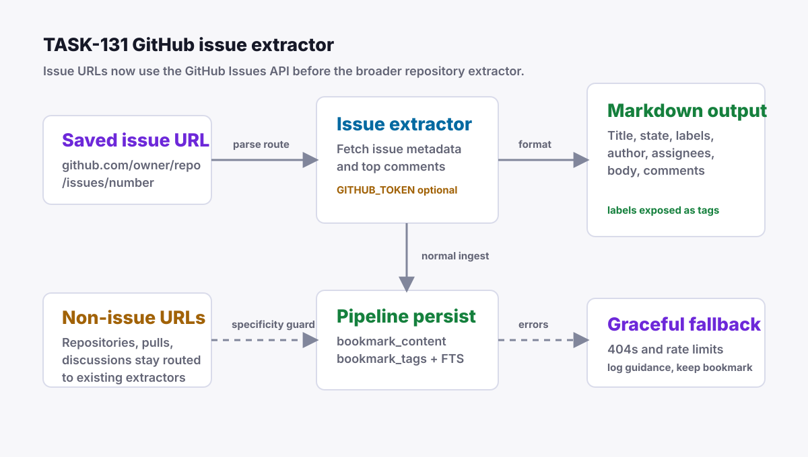

Grimoire Task Report
GitHub Issues Extractor

Before
All github.com/{owner}/{repo}/... URLs matched the repository extractor. Issue URLs therefore resolved to repository metadata and README content instead of issue title, body, labels, state, assignees, and comments.
Problem
Developers often save issue threads as reference material. Treating those URLs as repositories hid the useful discussion content and kept issue labels out of Little Imp tags and search indexing.
Changes Added
- Added
daemon/src/pipeline/extractors/github-issues.tswith parser, GitHub API fetch, optionalGITHUB_TOKENauthorization, issue metadata formatting, top-comment extraction, and rate-limit guidance. - Registered GitHub issue routing before the existing repository extractor so non-issue GitHub URLs keep their current behavior.
- Extended extraction results with optional generated tags and merged issue labels into existing bookmark tags through the normal pipeline tag path when generated fields are replaceable (manual/imported tags are preserved).
- Updated README, overview, and PRD extraction docs so GitHub issues are no longer described as future work.
Result
Saving a GitHub issue now stores structured markdown with repository, issue number, state, labels, author, assignees, body, and top comments. Label names are merged into the bookmark's existing tags (manual and imported tags are preserved) and included in the existing FTS tag index. A failure on the optional comments endpoint no longer discards the issue body and metadata.
Verification
cd daemon && bun test src/test/pipeline/github-issues.test.tscd daemon && bun test src/test/pipeline/extract.test.ts src/test/pipeline/github-issues.test.tscd daemon && bun run checknpm run test:daemonnpm run lintpasses with existing React fast-refresh warnings.npm run type-check- Live smoke against
https://github.com/microsoft/TypeScript/issues/1returned title, author, tags, body, and top comments.
Implementation Notes
There is no bookmark-content JSON metadata column today, so issue metadata is encoded in deterministic markdown and labels are persisted through the existing tags and bookmark_tags tables. The extractor follows the existing repository and StackOverflow pattern: public API access by default, optional environment token for higher limits, and fallback through the central extraction router when API extraction fails.
Files Changed
daemon/src/pipeline/extractors/github-issues.tsdaemon/src/pipeline/extractor.tsdaemon/src/pipeline/extractors/types.tsdaemon/src/pipeline/pipeline.tsdaemon/src/test/pipeline/github-issues.test.tsREADME.mddocs/overview.mddocs/prd.mdtasks/done/TASK-131-github-issues-extractor.md
Follow-Ups
If Little Imp later adds source-specific content metadata storage, the issue state, assignees, update time, and comment list can move from structured markdown into typed metadata while preserving the current markdown for search and reading.